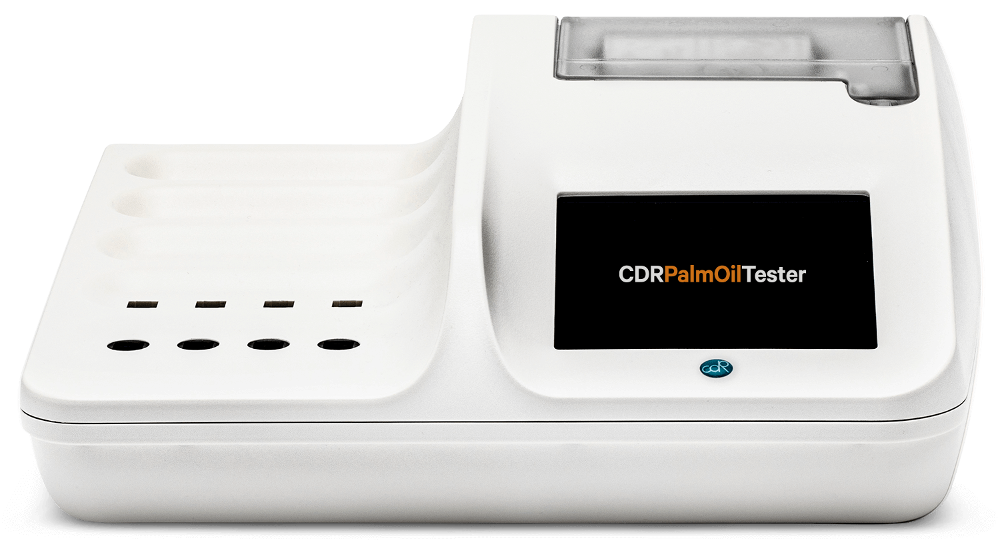

Garansi Resmi PT Kinglab Medika Lestari
Kapasitas
16 Sampel Simultan
Waktu Uji
1 – 5 Menit / Parameter
CDR PalmOilTester
The Simple and Reliable Analysis System for Raw & Refined Palm Oil
Sistem analisis kimia terkemuka untuk industri kelapa sawit di Indonesia. Memungkinkan pengujian mutu Crude Palm Oil (CPO), RBD Palm Oil, Olein, dan Palm Kernel Oil (PKO) langsung di Pabrik Kelapa Sawit (PKS), tangki timbun pelabuhan, maupun refinery tanpa pelarut beracun dan tanpa preparasi kimia rumit.
Parameter Utama yang Dianalisis:
Matriks & Aplikasi Sampel:
Crude Palm Oil (CPO)
Refined Bleached Deodorized Palm Oil (RBDPO)
Palm Olein & Stearin
Palm Kernel Oil (PKO)
Pabrik PKS & Refinery